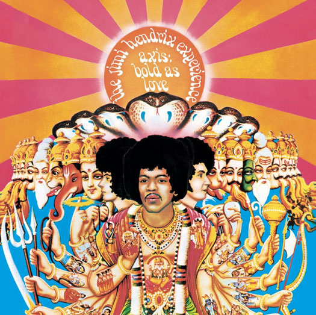
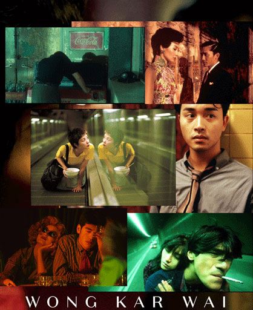
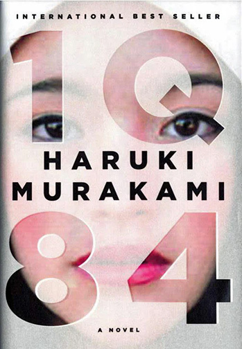

These are the three artists that really inspire me!
Jimi Hendrix jimihendrix

To begin with, the Jimi Hendrix Experience as a band really demonstrates this idea very innovatively back in the era of 60s. Their album "Are You Experienced" as a sort of playful joke regard to their name. Although this album is not my personal favorite, just the concept of "experience" that he tried to express to his audience is very inspiring to me. Moreover, Jimi Hendrix's playing is full of emotion, though there are many amazing tracks on this album, a separate track from this album, called "voodoo child (slight return) really spoke to me, you can hear the guitar screaming and just doing all kinds of wild stuff. poignant, eerie yet fierce and powerful. Listening to his music gives me chills and an image of his songs.
Wong Kar Wai wongkarwai

Secondly, one of my favorite director of all time. A legendary HongKong Director called Wong Kar Wai. He was originally born in Shanghai, China, so a lot of his films deliberately replicate a vintage Shanghai-nese feel. The reason why it feels inspiring to me is because I was from a city called Guangzhou located in China which is very close to HongKong. Growing up in an environment that was heavily exposed to his work felt personally connecting to me. Besides the stories in his film that made me relate to, his unique aesthetic and styles are my go to place if I ever run out of inspirations. My favorite movies of his are "Chungking Express" and "In the Mood for Love", the music selection in both films are perfect, can't recommend more!
Haruki Murakami haruki murakami

Finally, I love all the fictions written by Haruki Murakami. One interesting intentional device he uses is introducing the music track that the protagonist listening to when the story takes its place. So it often gives me the impression of a movie other than books. I think the magic is exploring two unknown thing at the same time which equal to double the fun. This feels inspirational to me because normally I don't like reading as much and it reflects the importance of interactive design